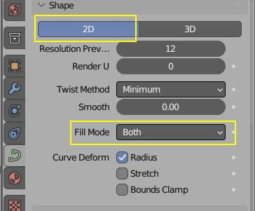
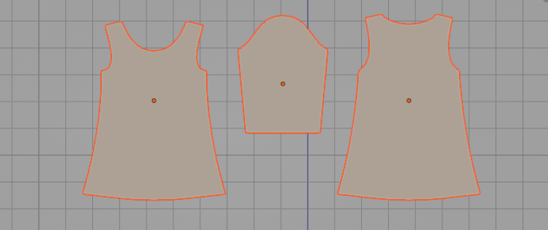
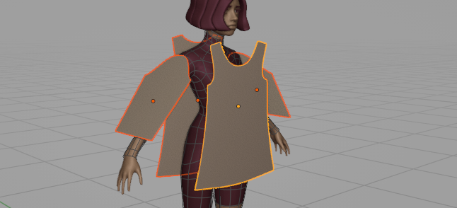

Quick Start#
Video Overview#
In video below you will learn, how to:
- add sewing patterns (2D Bezier curves)
- sew them together
- convert them to simulation ready mesh
- simulate them using Blenders cloth sim
- save the simulation to shape keys
- assign cloth physics presets to sewing patterns
Pattern Settings#
Garment Tool uses cyclic (closed) 2D Bezier curves to define patterns.
If you want to create your own sewing pattern from scratch use blender Bezier curve primitive:
- Shift+A -> Curve -> Bezier Circle
 Make sure your bezier curve uses settings above, or it won't be recognized as sewing pattern by add-on
Since release of Garment Tool 2.0 you can now add basic sewing patterns from Shift+A > Add Sewing Pattern > Select pattern from one of the presets:
- Rectangle
- Shirt
- Sleeve
- Pants
Quick Start - Skirt#
 Use: Shift+A > Add Sewing Pattern and add Sleeve and Shirt presets. Adjust them to your liking
 Place Sewing Patterns next to your character
Click [+] icon to create garment, in the Garment Tool Panel
Use Edit Sewings button (Chain icon) in the Edit / Generate section to connect patterns together. Pay attention to hotkeys listed in popup panel.
Notice - all patterns (2d curves) connected with sewings will be automatically assigned to the active garment.
You can now convert T-Shirt to simulation ready mesh, with Generate Mesh button. New collection will be created containing that mesh
Use Edit Bend for both sleeves patterns, so that they will wrap around the character arms.
Generated triangulated mesh can be simulated now using Blenders build in cloth sim - enable blender animation playback, and simulation will start
If the cloth falls too quickly to the ground due to gravity, you can use the 'Initialize Simulation' button. This will gradually increase the gravity strength from 0 to 9.8 m/s^2 over the 'Sim Time'. It will also animate the sewing force and the 'Max Shrinking' property (if applicable).
Notice: To avoid cloth passing through the character's body surface, increase the cloth 'Quality Steps' parameter above 15. Additionally, set the collision distance to approximately 0.002 (2 mm) and reduce it on the character's body as well.